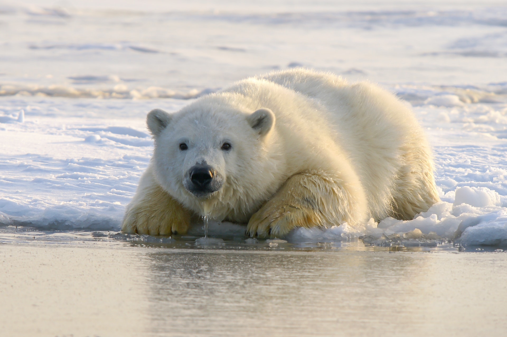
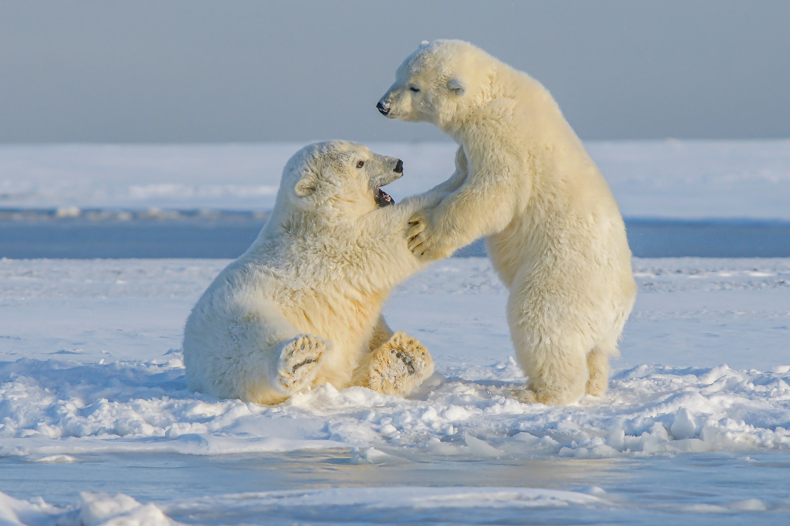
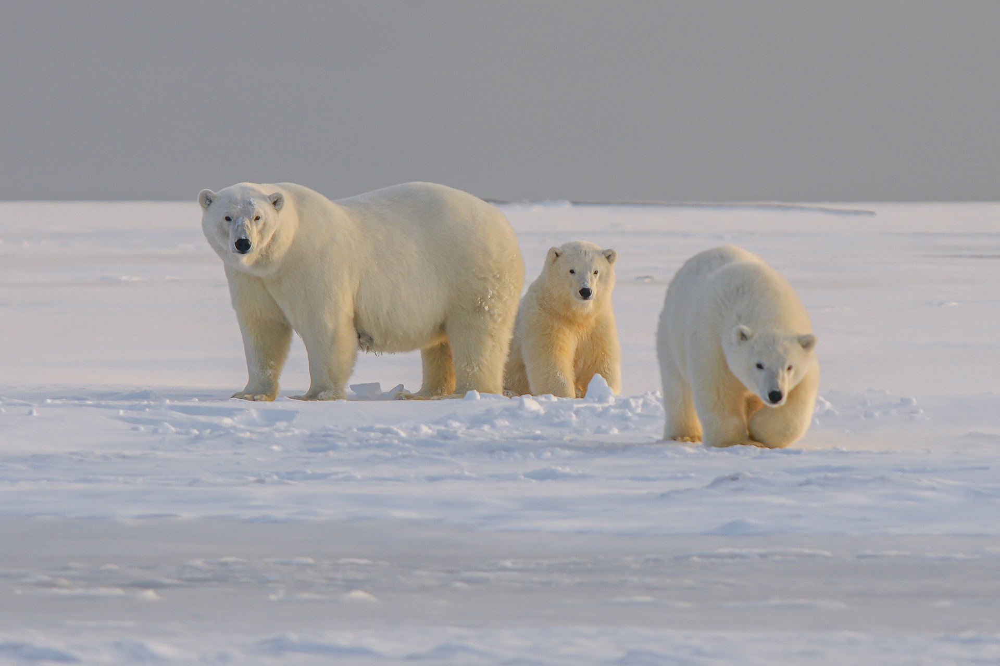

The Polar Bear lives in cold places when he can find different foods on the water . Polar bears can survive different cold temepatures.Polar Bears are big animals with large feet which alows them to climb every place that they want.
Polar Bears are not territorial and wont fight to secure their habbitat.They are friendly and never attack you without a reason.n general, adult polar bears live solitary lives. Yet, they have often been seen playing together for hours at a time and even sleeping in an embrace, and polar bear zoologist Nikita Ovsianikov has described adult males as having "well-developed friendships.The polar bear is found in the Arctic Circle  and in the south as Newfoundland.The polar bear is a really strong and powerfull animal which you will rearly see.In winter they fall in hibernation and sleep for a long time.A Polar bear family always staays together and will  stay mos of the time in their cave.Only the mother or father will go out to find food for their children.